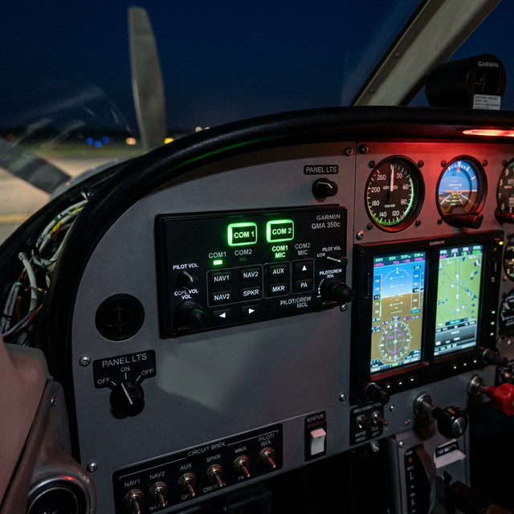

Audio panel/intercom basics
Module Objectives
- Describe the primary routing functions of an aircraft audio control panel.
- Contrast aircraft mono communication audio with standard consumer stereo audio.
- Explain why impedance matching is structurally critical for clean audio transmission.
Why Does This Matter?

A frustrated flight instructor reports that she can perfectly hear Air Traffic Control on COM1, but the moment she tries to monitor ATIS weather on COM2, the headset is utterly dead, even though both radios bench-test flawlessly. The issue isn't the radios, the headsets, or the wiring — the audio panel simply has the COM2 receive button deselected. The audio panel acts as the grand central switchboard for every single electronic sound generated in the aircraft. Completely understanding its routing logic prevents agonizing hours of unnecessary radio removals and phantom troubleshooting.
What You Need To Know
The Core of Cockpit Audio: The Audio Panel
The audio panel (or Audio Control Panel - ACP in transport aircraft) is the mandatory central routing hub sitting physically between the pilot's headset and every radio in the avionics stack. It performs four absolute critical functions:
- 1. Transmit Selection: It routes the pilot's microphone audio and the Push-To-Talk (PTT) trigger exclusively to the single COM radio selected for transmission (typically COM1 or COM2), preventing the pilot from accidentally broadcasting on two frequencies simultaneously.
- 2. Receiver Monitoring: It allows the crew to selectively mix and monitor incoming audio from multiple receivers at once (listening to ATC on COM1 while simultaneously listening to a weather broadcast on NAV1).
- 3. Intercom Management (ICS): It manages internal, voice-activated communication between the pilot, copilot, and passengers without broadcasting over the external radios.
- 4. Isolate Functions: It provides the ability to structurally isolate the crew from the passengers so ATC clearances are not drowned out by cabin chatter.
The Standard: Mono Audio
Unlike consumer car stereos, standard aircraft communication strictly utilizes mono (single-channel) audio.
- Both the left and right earcups of an aviation headset receive the exact same audio channel in parallel.
- Directional stereo audio is entirely unnecessary and consumes extra wiring weight when the only goal is vocal clarity for air traffic control. (Note: High-end modern panels do offer 3D spatial stereo to separate radio voices left/right, but mono remains the foundational standard.)
Impedance Matching (The Electrical Physics)
Audio signals require mathematically matched impedance between the audio panel's output amplifiers and the connected headset inputs to efficiently transfer power.
- Standard civilian aviation headsets utilize a generalized impedance of 150Ω to 600Ω.
- Military headsets use a vastly lower impedance of 5Ω to 8Ω.
- The Failure Mode: If you plug a low-impedance military headset into a high-impedance civilian audio panel, the drastic mismatch causes severe signal reflections, drastically reduced audio volume, horrific distortion, and can physically burn out the audio panel's output amplifier.
System Visualization
graph TD
A[Pilot Headset Mic] --> B[Audio Panel Switchboard]
B -->|MIC Audio & PTT| C[Selected Transmitter COM 1]
C -->|Receive ATC| B
D[NAV 1 Morse Code] -->|Receive ID| B
E[Intercom VOX] -->|Copilot Voice| B
B -->|Mixed Mono Output| F[Pilot Headset Earphones]
style B fill:#1e40af,stroke:#1e3a8a,stroke-width:2px,color:#fff
style C fill:#166534,stroke:#14532d,stroke-width:2px,color:#fff
On The Job
The #1 rule of audio troubleshooting: Before removing a single LRU from the rack, fundamentally verify the switchology on the audio panel. If the pilot complains of a dead radio, physically push the button on the audio panel to select it. If they complain they can't talk to ATC, verify the transmit selector is pointing to the correct radio. If they complain of constant hissing, adjust the intercom squelch knob. 80% of reported audio failures are operator errors stemming from an incorrectly configured audio panel.
Reference Terms
Mono Audio (GA Use)
Mono (single-channel) audio is typically used in general aviation aircraft for intercom communications and speaker monitoring — a single audio channel routed to all headsets and speakers.
Audio panel impedance matching
Audio signals must have matched impedance between the audio panel output and connected avionics inputs. Mismatched impedance causes signal reflections, reduced level, and distortion. Standard aviation audio interfaces are typically 150Ω or 600Ω — must match throughout the system.
Audio panel primary purpose
The audio panel routes and selects audio from multiple radios (COM1, COM2, NAV1, NAV2, ADF, marker beacon, etc.) to the pilot headset, copilot headset, and cabin speaker. Allows each crewmember to independently select what they hear. Also handles push-to-talk routing.
Audio Control Panel (ACP) purpose
The Audio Control Panel (ACP) is the centralized interface for all aircraft audio: select which COM to transmit on, select which COM/NAV receivers to monitor (listen to), adjust intercom, and access PA (public address) system. All audio management from one panel.
Audio Panel
The central routing device that acts as a switchboard for all incoming radio audio, outgoing microphone audio, and internal intercom communication.
Mono Audio
The aviation standard single-channel audio format where both headset speakers receive identical signals.
Impedance Matching
The electrical requirement ensuring audio output circuitry and headset input resistance are mathematically compatible to prevent severe distortion and volume loss.
ICS (Intercom System)
The internal closed-circuit audio network allowing crew and passengers to converse via headset without transmitting externally.
Assessment Check
The audio panel is the absolute gatekeeper for every sound entering or leaving the aircraft — always verify its routing selections and impedance compatibility before condemning a perfectly healthy radio. --- ---